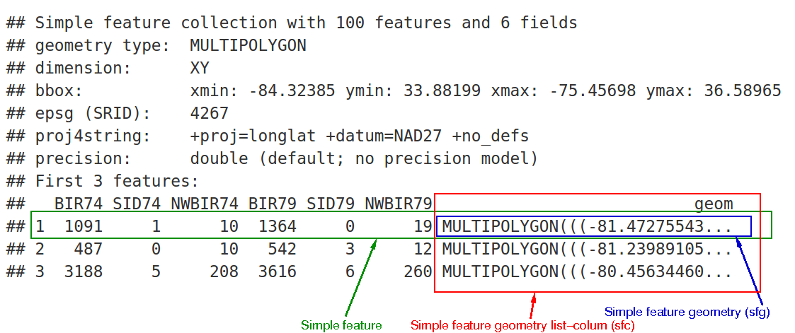
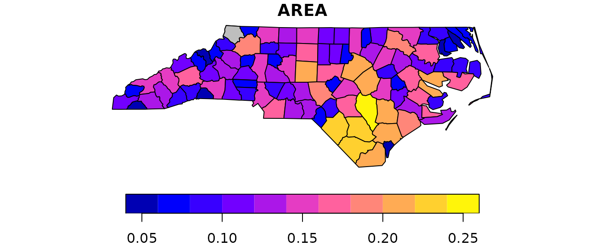
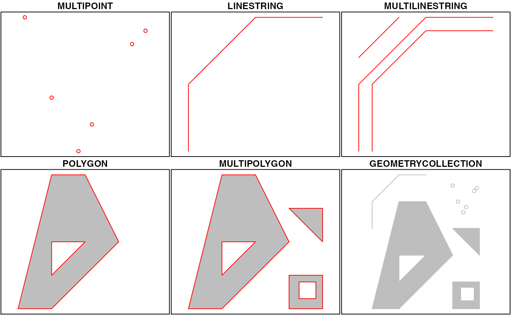
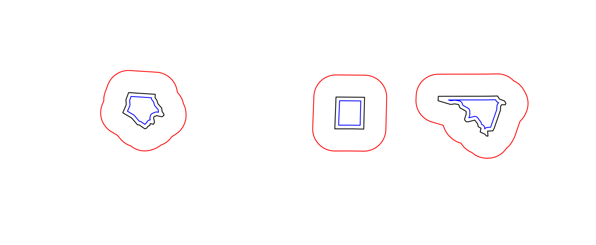
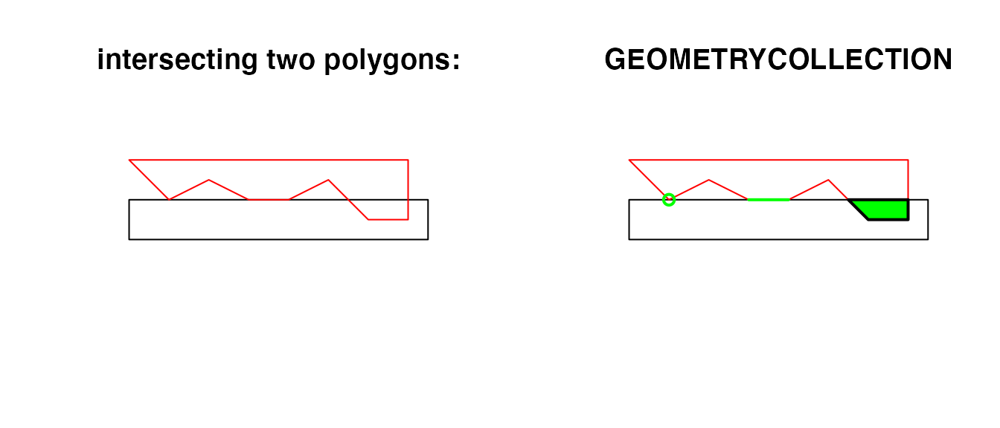

Simple features or simple feature access refers to a formal standard (ISO 19125-1:2004) that describes how objects in the real world can be represented in computers, with emphasis on the spatial geometry of these objects. It also describes how such objects can be stored in and retrieved from databases, and which geometrical operations should be defined for them.
The standard is widely implemented in spatial databases (such as PostGIS), commercial GIS (e.g., ESRI ArcGIS) and forms the vector data basis for libraries such as GDAL. A subset of simple features forms the GeoJSON standard.
R has well-supported classes for storing spatial data (sp) and interfacing to the above mentioned environments (rgdal, rgeos), but has so far lacked a complete implementation of simple features, making conversions at times convoluted, inefficient or incomplete. The package sf tries to fill this gap, and aims at succeeding sp in the long term.
This vignette:
- explains what is meant by features, and by simple features
- shows how they are implemented in R
- provides examples of how you can work with them
- shows how they can be read from and written to external files or resources
- discusses how they can be converted to and from sp objects
- shows how they can be used for meaningful spatial analysis
What is a feature?
A feature is thought of as a thing, or an object in the real world, such as a building or a tree. As is the case with objects, they often consist of other objects. This is the case with features too: a set of features can form a single feature. A forest stand can be a feature, a forest can be a feature, a city can be a feature. A satellite image pixel can be a feature, a complete image can be a feature too.
Features have a geometry describing where on Earth the feature is located, and they have attributes, which describe other properties. The geometry of a tree can be the delineation of its crown, of its stem, or the point indicating its centre. Other properties may include its height, color, diameter at breast height at a particular date, and so on.
The standard says: “A simple feature is defined by the OpenGIS Abstract specification to have both spatial and non-spatial attributes. Spatial attributes are geometry valued, and simple features are based on 2D geometry with linear interpolation between vertices.” We will see soon that the same standard will extend its coverage beyond 2D and beyond linear interpolation. Here, we take simple features as the data structures and operations described in the standard.
Dimensions
All geometries are composed of points. Points are coordinates in a 2-, 3- or 4-dimensional space. All points in a geometry have the same dimensionality. In addition to X and Y coordinates, there are two optional additional dimensions:
- a Z coordinate, denoting altitude
- an M coordinate (rarely used), denoting some measure that is associated with the point, rather than with the feature as a whole (in which case it would be a feature attribute); examples could be time of measurement, or measurement error of the coordinates
The four possible cases then are:
- two-dimensional points refer to x and y, easting and northing, or longitude and latitude, we refer to them as XY
- three-dimensional points as XYZ
- three-dimensional points as XYM
- four-dimensional points as XYZM (the third axis is Z, fourth M)
Simple feature geometry types
The following seven simple feature types are the most common, and are for instance the only ones used for GeoJSON:
| type | description |
|---|---|
POINT |
zero-dimensional geometry containing a single point |
LINESTRING |
sequence of points connected by straight, non-self intersecting line pieces; one-dimensional geometry |
POLYGON |
geometry with a positive area (two-dimensional); sequence of points form a closed, non-self intersecting ring; the first ring denotes the exterior ring, zero or more subsequent rings denote holes in this exterior ring |
MULTIPOINT |
set of points; a MULTIPOINT is simple if no two Points in the MULTIPOINT are equal |
MULTILINESTRING |
set of linestrings |
MULTIPOLYGON |
set of polygons |
GEOMETRYCOLLECTION |
set of geometries of any type except GEOMETRYCOLLECTION |
Each of the geometry types can also be a (typed) empty set,
containing zero coordinates (for POINT the standard is not
clear how to represent the empty geometry). Empty geometries can be
thought of being the analogue to missing (NA) attributes,
NULL values or empty lists.
The remaining geometries 10 are rarer, but increasingly find implementations:
| type | description |
|---|---|
CIRCULARSTRING |
The CIRCULARSTRING is the basic curve type, similar to a LINESTRING in the linear world. A single segment requires three points, the start and end points (first and third) and any other point on the arc. The exception to this is for a closed circle, where the start and end points are the same. In this case the second point MUST be the center of the arc, i.e., the opposite side of the circle. To chain arcs together, the last point of the previous arc becomes the first point of the next arc, just like in LINESTRING. This means that a valid circular string must have an odd number of points greater than 1. |
COMPOUNDCURVE |
A compound curve is a single, continuous curve that has both curved (circular) segments and linear segments. That means that in addition to having well-formed components, the end point of every component (except the last) must be coincident with the start point of the following component. |
CURVEPOLYGON |
Example compound curve in a curve polygon: CURVEPOLYGON(COMPOUNDCURVE(CIRCULARSTRING(0 0,2 0, 2 1, 2 3, 4 3),(4 3, 4 5, 1 4, 0 0)), CIRCULARSTRING(1.7 1, 1.4 0.4, 1.6 0.4, 1.6 0.5, 1.7 1) ) |
MULTICURVE |
A MultiCurve is a 1-dimensional GeometryCollection whose elements are Curves, it can include linear strings, circular strings or compound strings. |
MULTISURFACE |
A MultiSurface is a 2-dimensional GeometryCollection whose elements are Surfaces, all using coordinates from the same coordinate reference system. |
CURVE |
A Curve is a 1-dimensional geometric object usually stored as a sequence of Points, with the subtype of Curve specifying the form of the interpolation between Points |
SURFACE |
A Surface is a 2-dimensional geometric object |
POLYHEDRALSURFACE |
A PolyhedralSurface is a contiguous collection of polygons, which share common boundary segments |
TIN |
A TIN (triangulated irregular network) is a PolyhedralSurface consisting only of Triangle patches. |
TRIANGLE |
A Triangle is a polygon with 3 distinct, non-collinear vertices and no interior boundary |
Note that CIRCULASTRING, COMPOUNDCURVE and
CURVEPOLYGON are not described in the SFA standard, but in
the SQL-MM part 3
standard. The descriptions above were copied from the PostGIS
manual.
Coordinate reference system
Coordinates can only be placed on the Earth’s surface when their coordinate reference system (CRS) is known; this may be a spheroid CRS such as WGS84, a projected, two-dimensional (Cartesian) CRS such as a UTM zone or Web Mercator, or a CRS in three-dimensions, or including time. Similarly, M-coordinates need an attribute reference system, e.g. a measurement unit.
How simple features in R are organized
Package sf represents simple features as native R
objects. Similar to PostGIS, all
functions and methods in sf that operate on spatial data
are prefixed by st_, which refers to spatial type;
this makes them easily findable by command-line completion. Simple
features are implemented as R native data, using simple data structures
(S3 classes, lists, matrix, vector). Typical use involves reading,
manipulating and writing of sets of features, with attributes and
geometries.
As attributes are typically stored in data.frame objects
(or the very similar tbl_df), we will also store feature
geometries in a data.frame column. Since geometries are not
single-valued, they are put in a list-column, a list of length equal to
the number of records in the data.frame, with each list
element holding the simple feature geometry of that feature. The three
classes used to represent simple features are:
-
sf, the table (data.frame) with feature attributes and feature geometries, which contains -
sfc, the list-column with the geometries for each feature (record), which is composed of -
sfg, the feature geometry of an individual simple feature.
We will now discuss each of these three classes.
sf: objects with simple features
As we usually do not work with geometries of single simple features,
but with datasets consisting of sets of features with attributes, the
two are put together in sf (simple feature) objects. The
following command reads the nc dataset from a file that is
contained in the sf package:
library(sf)
## Linking to GEOS 3.10.2, GDAL 3.4.1, PROJ 8.2.1; sf_use_s2() is TRUE
nc <- st_read(system.file("shape/nc.shp", package="sf"))
## Reading layer `nc' from data source
## `/tmp/RtmpvTvDEG/temp_libpath122da25a006a7/sf/shape/nc.shp'
## using driver `ESRI Shapefile'
## Simple feature collection with 100 features and 14 fields
## Geometry type: MULTIPOLYGON
## Dimension: XY
## Bounding box: xmin: -84.32385 ymin: 33.88199 xmax: -75.45698 ymax: 36.58965
## Geodetic CRS: NAD27(Note that users will not use system.file but give a
filename directly, and that shapefiles consist of more than
one file, all with identical basename, which reside in the same
directory.) The short report printed gives the file name, the driver
(ESRI Shapefile), mentions that there are 100 features (records,
represented as rows) and 14 fields (attributes, represented as columns).
This object is of class
class(nc)
## [1] "sf" "data.frame"meaning it extends (and “is” a) data.frame, but with a
single list-column with geometries, which is held in the column with
name
attr(nc, "sf_column")
## [1] "geometry"If we print the first three features, we see their attribute values and an abridged version of the geometry
print(nc[9:15], n = 3)which would give the following output:

In the output we see:
- in green a simple feature: a single record, or
data.framerow, consisting of attributes and geometry - in blue a single simple feature geometry (an object of class
sfg) - in red a simple feature list-column (an object of class
sfc, which is a column in thedata.frame) - that although geometries are native R objects, they are printed as well-known text
Methods for sf objects are
methods(class = "sf")
## [1] [ [[<-
## [3] $<- aggregate
## [5] as.data.frame cbind
## [7] coerce dbDataType
## [9] dbWriteTable filter
## [11] identify initialize
## [13] merge plot
## [15] print rbind
## [17] show slotsFromS3
## [19] st_agr st_agr<-
## [21] st_area st_as_s2
## [23] st_as_sf st_as_sfc
## [25] st_bbox st_boundary
## [27] st_break_antimeridian st_buffer
## [29] st_cast st_centroid
## [31] st_collection_extract st_convex_hull
## [33] st_coordinates st_crop
## [35] st_crs st_crs<-
## [37] st_difference st_drop_geometry
## [39] st_filter st_geometry
## [41] st_geometry<- st_inscribed_circle
## [43] st_interpolate_aw st_intersection
## [45] st_intersects st_is_valid
## [47] st_is st_join
## [49] st_line_merge st_m_range
## [51] st_make_valid st_minimum_rotated_rectangle
## [53] st_nearest_points st_node
## [55] st_normalize st_point_on_surface
## [57] st_polygonize st_precision
## [59] st_reverse st_sample
## [61] st_segmentize st_set_precision
## [63] st_shift_longitude st_simplify
## [65] st_snap st_sym_difference
## [67] st_transform st_triangulate
## [69] st_union st_voronoi
## [71] st_wrap_dateline st_write
## [73] st_z_range st_zm
## [75] transform
## see '?methods' for accessing help and source codeIt is also possible to create data.frame objects with
geometry list-columns that are not of class sf, e.g. by
nc.no_sf <- as.data.frame(nc)
class(nc.no_sf)
## [1] "data.frame"However, such objects:
- no longer register which column is the geometry list-column
- no longer have a plot method, and
- lack all of the other dedicated methods listed above for class
sf
sfc: simple feature geometry list-column
The column in the sf data.frame that contains the
geometries is a list, of class sfc. We can retrieve the
geometry list-column in this case by nc$geom or
nc[[15]], but the more general way uses
st_geometry:
(nc_geom <- st_geometry(nc))
## Geometry set for 100 features
## Geometry type: MULTIPOLYGON
## Dimension: XY
## Bounding box: xmin: -84.32385 ymin: 33.88199 xmax: -75.45698 ymax: 36.58965
## Geodetic CRS: NAD27
## First 5 geometries:
## MULTIPOLYGON (((-81.47276 36.23436, -81.54084 3...
## MULTIPOLYGON (((-81.23989 36.36536, -81.24069 3...
## MULTIPOLYGON (((-80.45634 36.24256, -80.47639 3...
## MULTIPOLYGON (((-76.00897 36.3196, -76.01735 36...
## MULTIPOLYGON (((-77.21767 36.24098, -77.23461 3...Geometries are printed in abbreviated form, but we can view a complete geometry by selecting it, e.g. the first one by
nc_geom[[1]]
## MULTIPOLYGON (((-81.47276 36.23436, -81.54084 36.27251, -81.56198 36.27359, -81.63306 36.34069, -81.74107 36.39178, -81.69828 36.47178, -81.7028 36.51934, -81.67 36.58965, -81.3453 36.57286, -81.34754 36.53791, -81.32478 36.51368, -81.31332 36.4807, -81.26624 36.43721, -81.26284 36.40504, -81.24069 36.37942, -81.23989 36.36536, -81.26424 36.35241, -81.32899 36.3635, -81.36137 36.35316, -81.36569 36.33905, -81.35413 36.29972, -81.36745 36.2787, -81.40639 36.28505, -81.41233 36.26729, -81.43104 36.26072, -81.45289 36.23959, -81.47276 36.23436)))The way this is printed is called well-known text, and is
part of the standards. The word MULTIPOLYGON is followed by
three parentheses, because it can consist of multiple polygons, in the
form of MULTIPOLYGON(POL1,POL2), where POL1
might consist of an exterior ring and zero or more interior rings, as of
(EXT1,HOLE1,HOLE2). Sets of coordinates are held together
with parentheses, so we get
((crds_ext)(crds_hole1)(crds_hole2)) where
crds_ is a comma-separated set of coordinates of a ring.
This leads to the case above, where
MULTIPOLYGON(((crds_ext))) refers to the exterior ring (1),
without holes (2), of the first polygon (3) - hence three
parentheses.
We can see there is a single polygon with no rings:
par(mar = c(0,0,1,0))
plot(nc[1], reset = FALSE) # reset = FALSE: we want to add to a plot with a legend
plot(nc[1,1], col = 'grey', add = TRUE)
but some of the polygons in this dataset have multiple exterior rings; they can be identified by
par(mar = c(0,0,1,0))
(w <- which(sapply(nc_geom, length) > 1))
## [1] 4 56 57 87 91 95
plot(nc[w,1], col = 2:7)Following the MULTIPOLYGON datastructure, in R we have a
list of lists of lists of matrices. For instance, we get the first 3
coordinate pairs of the second exterior ring (first ring is always
exterior) for the geometry of feature 4 by
nc_geom[[4]][[2]][[1]][1:3,]
## [,1] [,2]
## [1,] -76.02717 36.55672
## [2,] -75.99866 36.55665
## [3,] -75.91192 36.54253Geometry columns have their own class,
class(nc_geom)
## [1] "sfc_MULTIPOLYGON" "sfc"Methods for geometry list-columns include
methods(class = 'sfc')
## [1] [ [<-
## [3] as.data.frame c
## [5] coerce format
## [7] identify initialize
## [9] Ops print
## [11] rep show
## [13] slotsFromS3 st_area
## [15] st_as_binary st_as_grob
## [17] st_as_s2 st_as_sf
## [19] st_as_text st_bbox
## [21] st_boundary st_break_antimeridian
## [23] st_buffer st_cast
## [25] st_centroid st_collection_extract
## [27] st_convex_hull st_coordinates
## [29] st_crop st_crs
## [31] st_crs<- st_difference
## [33] st_geometry st_inscribed_circle
## [35] st_intersection st_intersects
## [37] st_is_valid st_is
## [39] st_line_merge st_m_range
## [41] st_make_valid st_minimum_rotated_rectangle
## [43] st_nearest_points st_node
## [45] st_normalize st_point_on_surface
## [47] st_polygonize st_precision
## [49] st_reverse st_sample
## [51] st_segmentize st_set_precision
## [53] st_shift_longitude st_simplify
## [55] st_snap st_sym_difference
## [57] st_transform st_triangulate
## [59] st_union st_voronoi
## [61] st_wrap_dateline st_write
## [63] st_z_range st_zm
## [65] str summary
## [67] vec_cast.sfc vec_ptype2.sfc
## see '?methods' for accessing help and source codeCoordinate reference systems (st_crs and
st_transform) are discussed in the section on coordinate reference systems. st_as_wkb and
st_as_text convert geometry list-columns into
well-known-binary or well-known-text, explained below. st_bbox retrieves the coordinate
bounding box.
Attributes include
attributes(nc_geom)
## $n_empty
## [1] 0
##
## $crs
## Coordinate Reference System:
## User input: NAD27
## wkt:
## GEOGCRS["NAD27",
## DATUM["North American Datum 1927",
## ELLIPSOID["Clarke 1866",6378206.4,294.978698213898,
## LENGTHUNIT["metre",1]]],
## PRIMEM["Greenwich",0,
## ANGLEUNIT["degree",0.0174532925199433]],
## CS[ellipsoidal,2],
## AXIS["latitude",north,
## ORDER[1],
## ANGLEUNIT["degree",0.0174532925199433]],
## AXIS["longitude",east,
## ORDER[2],
## ANGLEUNIT["degree",0.0174532925199433]],
## ID["EPSG",4267]]
##
## $class
## [1] "sfc_MULTIPOLYGON" "sfc"
##
## $precision
## [1] 0
##
## $bbox
## xmin ymin xmax ymax
## -84.32385 33.88199 -75.45698 36.58965Mixed geometry types
The class of nc_geom is
c("sfc_MULTIPOLYGON", "sfc"): sfc is shared
with all geometry types, and sfc_TYPE with
TYPE indicating the type of the particular geometry at
hand.
There are two “special” types: GEOMETRYCOLLECTION, and
GEOMETRY. GEOMETRYCOLLECTION indicates that
each of the geometries may contain a mix of geometry types, as in
(mix <- st_sfc(st_geometrycollection(list(st_point(1:2))),
st_geometrycollection(list(st_linestring(matrix(1:4,2))))))
## Geometry set for 2 features
## Geometry type: GEOMETRYCOLLECTION
## Dimension: XY
## Bounding box: xmin: 1 ymin: 2 xmax: 2 ymax: 4
## CRS: NA
## GEOMETRYCOLLECTION (POINT (1 2))
## GEOMETRYCOLLECTION (LINESTRING (1 3, 2 4))
class(mix)
## [1] "sfc_GEOMETRYCOLLECTION" "sfc"Still, the geometries are here of a single type.
The second GEOMETRY, indicates that the geometries in
the geometry list-column are of varying type:
(mix <- st_sfc(st_point(1:2), st_linestring(matrix(1:4,2))))
## Geometry set for 2 features
## Geometry type: GEOMETRY
## Dimension: XY
## Bounding box: xmin: 1 ymin: 2 xmax: 2 ymax: 4
## CRS: NA
## POINT (1 2)
## LINESTRING (1 3, 2 4)
class(mix)
## [1] "sfc_GEOMETRY" "sfc"These two are fundamentally different: GEOMETRY is a
superclass without instances, GEOMETRYCOLLECTION is a
geometry instance. GEOMETRY list-columns occur when we read
in a data source with a mix of geometry types.
GEOMETRYCOLLECTION is a single feature’s geometry:
the intersection of two feature polygons may consist of points, lines
and polygons, see the example below.
sfg: simple feature geometry
Simple feature geometry (sfg) objects carry the geometry
for a single feature, e.g. a point, linestring or polygon.
Simple feature geometries are implemented as R native data, using the following rules
- a single POINT is a numeric vector
- a set of points, e.g. in a LINESTRING or ring of a POLYGON is a
matrix, each row containing a point - any other set is a
list
Creator functions are rarely used in practice, since we typically bulk read and write spatial data. They are useful for illustration:
(x <- st_point(c(1,2)))
## POINT (1 2)
str(x)
## 'XY' num [1:2] 1 2
(x <- st_point(c(1,2,3)))
## POINT Z (1 2 3)
str(x)
## 'XYZ' num [1:3] 1 2 3
(x <- st_point(c(1,2,3), "XYM"))
## POINT M (1 2 3)
str(x)
## 'XYM' num [1:3] 1 2 3
(x <- st_point(c(1,2,3,4)))
## POINT ZM (1 2 3 4)
str(x)
## 'XYZM' num [1:4] 1 2 3 4
st_zm(x, drop = TRUE, what = "ZM")
## POINT (1 2)This means that we can represent 2-, 3- or 4-dimensional coordinates.
All geometry objects inherit from sfg (simple feature
geometry), but also have a type (e.g. POINT), and a
dimension (e.g. XYM) class name. A figure illustrates six
of the seven most common types.
With the exception of the POINT which has a single point
as geometry, the remaining six common single simple feature geometry
types that correspond to single features (single records, or rows in a
data.frame) are created like this
p <- rbind(c(3.2,4), c(3,4.6), c(3.8,4.4), c(3.5,3.8), c(3.4,3.6), c(3.9,4.5))
(mp <- st_multipoint(p))
## MULTIPOINT ((3.2 4), (3 4.6), (3.8 4.4), (3.5 3.8), (3.4 3.6), (3.9 4.5))
s1 <- rbind(c(0,3),c(0,4),c(1,5),c(2,5))
(ls <- st_linestring(s1))
## LINESTRING (0 3, 0 4, 1 5, 2 5)
s2 <- rbind(c(0.2,3), c(0.2,4), c(1,4.8), c(2,4.8))
s3 <- rbind(c(0,4.4), c(0.6,5))
(mls <- st_multilinestring(list(s1,s2,s3)))
## MULTILINESTRING ((0 3, 0 4, 1 5, 2 5), (0.2 3, 0.2 4, 1 4.8, 2 4.8), (0 4.4, 0.6 5))
p1 <- rbind(c(0,0), c(1,0), c(3,2), c(2,4), c(1,4), c(0,0))
p2 <- rbind(c(1,1), c(1,2), c(2,2), c(1,1))
pol <-st_polygon(list(p1,p2))
p3 <- rbind(c(3,0), c(4,0), c(4,1), c(3,1), c(3,0))
p4 <- rbind(c(3.3,0.3), c(3.8,0.3), c(3.8,0.8), c(3.3,0.8), c(3.3,0.3))[5:1,]
p5 <- rbind(c(3,3), c(4,2), c(4,3), c(3,3))
(mpol <- st_multipolygon(list(list(p1,p2), list(p3,p4), list(p5))))
## MULTIPOLYGON (((0 0, 1 0, 3 2, 2 4, 1 4, 0 0), (1 1, 1 2, 2 2, 1 1)), ((3 0, 4 0, 4 1, 3 1, 3 0), (3.3 0.3, 3.3 0.8, 3.8 0.8, 3.8 0.3, 3.3 0.3)), ((3 3, 4 2, 4 3, 3 3)))
(gc <- st_geometrycollection(list(mp, mpol, ls)))
## GEOMETRYCOLLECTION (MULTIPOINT ((3.2 4), (3 4.6), (3.8 4.4), (3.5 3.8), (3.4 3.6), (3.9 4.5)), MULTIPOLYGON (((0 0, 1 0, 3 2, 2 4, 1 4, 0 0), (1 1, 1 2, 2 2, 1 1)), ((3 0, 4 0, 4 1, 3 1, 3 0), (3.3 0.3, 3.3 0.8, 3.8 0.8, 3.8 0.3, 3.3 0.3)), ((3 3, 4 2, 4 3, 3 3))), LINESTRING (0 3, 0 4, 1 5, 2 5))The objects created are shown here:

Geometries can also be empty, as in
(x <- st_geometrycollection())
## GEOMETRYCOLLECTION EMPTY
length(x)
## [1] 0Well-known text, well-known binary, precision
WKT and WKB
Well-known text (WKT) and well-known binary (WKB) are two encodings for simple feature geometries. Well-known text, e.g. seen in
x <- st_linestring(matrix(10:1,5))
st_as_text(x)
## [1] "LINESTRING (10 5, 9 4, 8 3, 7 2, 6 1)"(but without the leading ## [1] and quotes), is
human-readable. Coordinates are usually floating point numbers, and
moving large amounts of information as text is slow and imprecise. For
that reason, we use well-known binary (WKB) encoding
st_as_binary(x)
## [1] 01 02 00 00 00 05 00 00 00 00 00 00 00 00 00 24 40 00 00 00 00 00 00 14 40
## [26] 00 00 00 00 00 00 22 40 00 00 00 00 00 00 10 40 00 00 00 00 00 00 20 40 00
## [51] 00 00 00 00 00 08 40 00 00 00 00 00 00 1c 40 00 00 00 00 00 00 00 40 00 00
## [76] 00 00 00 00 18 40 00 00 00 00 00 00 f0 3fWKT and WKB can both be transformed back into R native objects by
st_as_sfc("LINESTRING(10 5, 9 4, 8 3, 7 2, 6 1)")[[1]]
## LINESTRING (10 5, 9 4, 8 3, 7 2, 6 1)
st_as_sfc(structure(list(st_as_binary(x)), class = "WKB"))[[1]]
## LINESTRING (10 5, 9 4, 8 3, 7 2, 6 1)GDAL, GEOS, spatial databases and GIS read and write WKB which is
fast and precise. Conversion between R native objects and WKB is done by
package sf in compiled (C++/Rcpp) code, making this a
reusable and fast route for I/O of simple feature geometries in R.
Precision
One of the attributes of a geometry list-column (sfc) is
the precision: a double number that, when non-zero, causes
some rounding during conversion to WKB, which might help certain
geometrical operations succeed that would otherwise fail due to floating
point representation. The model is that of GEOS, which copies from the
Java Topology Suite (JTS), and works like
this:
- if precision is zero (default, unspecified), nothing is modified
- negative values convert to float (4-byte real) precision
- positive values convert to
round(x*precision)/precision.
For the precision model, see also here,
where it is written that: “… to specify 3 decimal places of precision,
use a scale factor of 1000. To specify -3 decimal places of precision
(i.e. rounding to the nearest 1000), use a scale factor of 0.001.” Note
that all coordinates, so also Z or M values
(if present) are affected. Choosing values for precision
may require some experimenting.
Reading and writing
As we’ve seen above, reading spatial data from an external file can be done by
filename <- system.file("shape/nc.shp", package="sf")
nc <- st_read(filename)
## Reading layer `nc' from data source
## `/tmp/RtmpvTvDEG/temp_libpath122da25a006a7/sf/shape/nc.shp'
## using driver `ESRI Shapefile'
## Simple feature collection with 100 features and 14 fields
## Geometry type: MULTIPOLYGON
## Dimension: XY
## Bounding box: xmin: -84.32385 ymin: 33.88199 xmax: -75.45698 ymax: 36.58965
## Geodetic CRS: NAD27we can suppress the output by adding argument quiet=TRUE
or by using the otherwise nearly identical but more quiet
nc <- read_sf(filename)Writing takes place in the same fashion, using
st_write:
st_write(nc, "nc.shp")
## Writing layer `nc' to data source `nc.shp' using driver `ESRI Shapefile'
## Writing 100 features with 14 fields and geometry type Multi Polygon.If we repeat this, we get an error message that the file already exists, and we can overwrite by
st_write(nc, "nc.shp", delete_layer = TRUE)
## Deleting layer `nc' using driver `ESRI Shapefile'
## Writing layer `nc' to data source `nc.shp' using driver `ESRI Shapefile'
## Writing 100 features with 14 fields and geometry type Multi Polygon.or its quiet alternative that does this by default,
write_sf(nc, "nc.shp") # silently overwritesDriver-specific options
The dsn and layer arguments to
st_read and st_write denote a data source name
and optionally a layer name. Their exact interpretation as well as the
options they support vary per driver, the GDAL driver
documentation is best consulted for this. For instance, a PostGIS
table in database postgis might be read by
meuse <- st_read("PG:dbname=postgis", "meuse")where the PG: string indicates this concerns the PostGIS
driver, followed by database name, and possibly port and user
credentials. When the layer and driver
arguments are not specified, st_read tries to guess them
from the datasource, or else simply reads the first layer, giving a
warning in case there are more.
st_read typically reads the coordinate reference system
as proj4string, but not the EPSG (SRID). GDAL cannot
retrieve SRID (EPSG code) from proj4string strings, and,
when needed, it has to be set by the user. See also the section on coordinate reference systems.
st_drivers() returns a data.frame listing
available drivers, and their metadata: names, whether a driver can
write, and whether it is a raster and/or vector driver. All drivers can
read. Reading of some common data formats is illustrated below:
st_layers(dsn) lists the layers present in data source
dsn, and gives the number of fields, features and geometry
type for each layer:
st_layers(system.file("osm/overpass.osm", package="sf"))
## Driver: OSM
## Available layers:
## layer_name geometry_type features fields crs_name
## 1 points Point NA 10 WGS 84
## 2 lines Line String NA 9 WGS 84
## 3 multilinestrings Multi Line String NA 4 WGS 84
## 4 multipolygons Multi Polygon NA 25 WGS 84
## 5 other_relations Geometry Collection NA 4 WGS 84we see that in this case, the number of features is NA
because for this xml file the whole file needs to be read, which may be
costly for large files. We can force counting by
Sys.setenv(OSM_USE_CUSTOM_INDEXING="NO")
st_layers(system.file("osm/overpass.osm", package="sf"), do_count = TRUE)
## Driver: OSM
## Available layers:
## layer_name geometry_type features fields crs_name
## 1 points Point 1 10 WGS 84
## 2 lines Line String 0 9 WGS 84
## 3 multilinestrings Multi Line String 0 4 WGS 84
## 4 multipolygons Multi Polygon 13 25 WGS 84
## 5 other_relations Geometry Collection 0 4 WGS 84Another example of reading kml and kmz files is:
# Download .shp data
u_shp <- "http://coagisweb.cabq.gov/datadownload/biketrails.zip"
download.file(u_shp, "biketrails.zip")
unzip("biketrails.zip")
u_kmz <- "http://coagisweb.cabq.gov/datadownload/BikePaths.kmz"
download.file(u_kmz, "BikePaths.kmz")
# Read file formats
biketrails_shp <- st_read("biketrails.shp")
if(Sys.info()[1] == "Linux") # may not work if not Linux
biketrails_kmz <- st_read("BikePaths.kmz")
u_kml = "http://www.northeastraces.com/oxonraces.com/nearme/safe/6.kml"
download.file(u_kml, "bikeraces.kml")
bikraces <- st_read("bikeraces.kml")Create, read, update and delete
GDAL provides the crud
(create, read, update, delete) functions to persistent storage.
st_read (or read_sf) are used for reading.
st_write (or write_sf) creates, and has the
following arguments to control update and delete:
-
update=TRUEcauses an existing data source to be updated, if it exists; this option is by defaultTRUEfor all database drivers, where the database is updated by adding a table. -
delete_layer=TRUEcausesst_writetry to open the the data source and delete the layer; no errors are given if the data source is not present, or the layer does not exist in the data source. -
delete_dsn=TRUEcausesst_writeto delete the data source when present, before writing the layer in a newly created data source. No error is given when the data source does not exist. This option should be handled with care, as it may wipe complete directories or databases.
Connection to spatial databases
Read and write functions, st_read() and
st_write(), can handle connections to spatial databases to
read WKB or WKT directly without using GDAL. Although intended to use
the DBI interface, current use and testing of these functions are
limited to PostGIS.
Coordinate reference systems and transformations
Coordinate reference systems (CRS) are like measurement units for
coordinates: they specify which location on Earth a particular
coordinate pair refers to. We saw above that sfc objects
(geometry list-columns) have two attributes to store a CRS:
epsg and proj4string. This implies that all
geometries in a geometry list-column must have the same CRS. Both may be
NA, e.g. in case the CRS is unknown, or when we work with
local coordinate systems (e.g. inside a building, a body, or an abstract
space).
proj4string is a generic, string-based description of a
CRS, understood by the PROJ library. It
defines projection types and (often) defines parameter values for
particular projections, and hence can cover an infinite amount of
different projections. This library (also used by GDAL) provides
functions to convert or transform between different CRS.
epsg is the integer ID for a particular, known CRS that can
be resolved into a proj4string. Some
proj4string values can resolved back into their
corresponding epsg ID, but this does not always work.
The importance of having epsg values stored with data
besides proj4string values is that the epsg
refers to particular, well-known CRS, whose parameters may change
(improve) over time; fixing only the proj4string may remove
the possibility to benefit from such improvements, and limit some of the
provenance of datasets, but may help reproducibility.
Coordinate reference system transformations can be carried out using
st_transform, e.g. converting longitudes/latitudes in NAD27
to web mercator (EPSG:3857) can be done by
nc.web_mercator <- st_transform(nc, 3857)
st_geometry(nc.web_mercator)[[4]][[2]][[1]][1:3,]
## [,1] [,2]
## [1,] -8463267 4377519
## [2,] -8460094 4377510
## [3,] -8450437 4375553Conversion, including to and from sp
sf objects and objects deriving from
Spatial (package sp) can be coerced both
ways:
showMethods("coerce", classes = "sf")
## Function: coerce (package methods)
## from="sf", to="Spatial"
## from="Spatial", to="sf"
methods(st_as_sf)
## [1] st_as_sf.data.frame* st_as_sf.lpp* st_as_sf.map*
## [4] st_as_sf.owin* st_as_sf.ppp* st_as_sf.ppplist*
## [7] st_as_sf.psp* st_as_sf.s2_geography* st_as_sf.sf*
## [10] st_as_sf.sfc* st_as_sf.Spatial* st_as_sf.SpatVector*
## see '?methods' for accessing help and source code
methods(st_as_sfc)
## [1] st_as_sfc.bbox* st_as_sfc.blob*
## [3] st_as_sfc.character* st_as_sfc.dimensions*
## [5] st_as_sfc.factor* st_as_sfc.list*
## [7] st_as_sfc.map* st_as_sfc.owin*
## [9] st_as_sfc.pq_geometry* st_as_sfc.psp*
## [11] st_as_sfc.raw* st_as_sfc.s2_geography*
## [13] st_as_sfc.sf* st_as_sfc.SpatialLines*
## [15] st_as_sfc.SpatialMultiPoints* st_as_sfc.SpatialPixels*
## [17] st_as_sfc.SpatialPoints* st_as_sfc.SpatialPolygons*
## [19] st_as_sfc.tess* st_as_sfc.WKB*
## see '?methods' for accessing help and source code
# anticipate that sp::CRS will expand proj4strings:
p4s <- "+proj=longlat +datum=NAD27 +no_defs +ellps=clrk66 +nadgrids=@conus,@alaska,@ntv2_0.gsb,@ntv1_can.dat"
st_crs(nc) <- p4s
# anticipate geometry column name changes:
names(nc)[15] = "geometry"
attr(nc, "sf_column") = "geometry"
nc.sp <- as(nc, "Spatial")
class(nc.sp)
## [1] "SpatialPolygonsDataFrame"
## attr(,"package")
## [1] "sp"
nc2 <- st_as_sf(nc.sp)
all.equal(nc, nc2)
## [1] "Attributes: < Component \"class\": Lengths (4, 2) differ (string compare on first 2) >"
## [2] "Attributes: < Component \"class\": 1 string mismatch >"
## [3] "Component \"geometry\": Attributes: < Component \"crs\": Component \"input\": 1 string mismatch >"
## [4] "Component \"geometry\": Attributes: < Component \"crs\": Component \"wkt\": 1 string mismatch >"As the Spatial* objects only support
MULTILINESTRING and MULTIPOLYGON,
LINESTRING and POLYGON geometries are
automatically coerced into their MULTI form. When
converting Spatial* into sf, if all geometries
consist of a single POLYGON (possibly with holes), a
POLYGON and otherwise all geometries are returned as
MULTIPOLYGON: a mix of POLYGON and
MULTIPOLYGON (such as common in shapefiles) is not created.
Argument forceMulti=TRUE will override this, and create
MULTIPOLYGONs in all cases. For LINES the
situation is identical.
Geometrical operations
The standard for simple feature access defines a number of geometrical operations.
st_is_valid and st_is_simple return a
boolean indicating whether a geometry is valid or simple.
st_is_valid(nc[1:2,])
## [1] TRUE TRUEst_distance returns a dense numeric matrix with
distances between geometries. st_relate returns a character
matrix with the DE9-IM
values for each pair of geometries:
x = st_transform(nc, 32119)
st_distance(x[c(1,4,22),], x[c(1, 33,55,56),])
## Units: [m]
## [,1] [,2] [,3] [,4]
## [1,] 0.00 312184.9 128341.85 475623.3
## [2,] 440561.15 114939.7 590434.80 0.0
## [3,] 18944.03 352719.1 78756.89 517527.8
st_relate(nc[1:5,], nc[1:4,])
## although coordinates are longitude/latitude, st_relate assumes that they are
## planar
## [,1] [,2] [,3] [,4]
## [1,] "2FFF1FFF2" "FF2F11212" "FF2FF1212" "FF2FF1212"
## [2,] "FF2F11212" "2FFF1FFF2" "FF2F11212" "FF2FF1212"
## [3,] "FF2FF1212" "FF2F11212" "2FFF1FFF2" "FF2FF1212"
## [4,] "FF2FF1212" "FF2FF1212" "FF2FF1212" "2FFF1FFF2"
## [5,] "FF2FF1212" "FF2FF1212" "FF2FF1212" "FF2FF1212"The commands st_intersects, st_disjoint,
st_touches, st_crosses,
st_within, st_contains,
st_overlaps, st_equals,
st_covers, st_covered_by,
st_equals_exact and st_is_within_distance
return a sparse matrix with matching (TRUE) indexes, or a full logical
matrix:
st_intersects(nc[1:5,], nc[1:4,])
## Sparse geometry binary predicate list of length 5, where the predicate
## was `intersects'
## 1: 1, 2
## 2: 1, 2, 3
## 3: 2, 3
## 4: 4
## 5: (empty)
st_intersects(nc[1:5,], nc[1:4,], sparse = FALSE)
## [,1] [,2] [,3] [,4]
## [1,] TRUE TRUE FALSE FALSE
## [2,] TRUE TRUE TRUE FALSE
## [3,] FALSE TRUE TRUE FALSE
## [4,] FALSE FALSE FALSE TRUE
## [5,] FALSE FALSE FALSE FALSEThe commands st_buffer, st_boundary,
st_convexhull, st_union_cascaded,
st_simplify, st_triangulate,
st_polygonize, st_centroid,
st_segmentize, and st_union return new
geometries, e.g.:
sel <- c(1,5,14)
geom = st_geometry(nc.web_mercator[sel,])
buf <- st_buffer(geom, dist = 30000)
plot(buf, border = 'red')
plot(geom, add = TRUE)
plot(st_buffer(geom, -5000), add = TRUE, border = 'blue')Commands st_intersection, st_union,
st_difference, st_sym_difference return new
geometries that are a function of pairs of geometries:

The following code shows how computing an intersection between two
polygons may yield a GEOMETRYCOLLECTION with a point, line
and polygon:
opar <- par(mfrow = c(1, 2))
a <- st_polygon(list(cbind(c(0,0,7.5,7.5,0),c(0,-1,-1,0,0))))
b <- st_polygon(list(cbind(c(0,1,2,3,4,5,6,7,7,0),c(1,0,.5,0,0,0.5,-0.5,-0.5,1,1))))
plot(a, ylim = c(-1,1))
title("intersecting two polygons:")
plot(b, add = TRUE, border = 'red')
(i <- st_intersection(a,b))
## GEOMETRYCOLLECTION (POLYGON ((7 0, 7 -0.5, 6 -0.5, 5.5 0, 7 0)), LINESTRING (4 0, 3 0), POINT (1 0))
plot(a, ylim = c(-1,1))
title("GEOMETRYCOLLECTION")
plot(b, add = TRUE, border = 'red')
plot(i, add = TRUE, col = 'green', lwd = 2)
par(opar)Non-simple and non-valid geometries
Non-simple geometries are for instance self-intersecting lines (left); non-valid geometries are for instance polygons with slivers (middle) or self-intersections (right).
library(sf)
x1 <- st_linestring(cbind(c(0,1,0,1),c(0,1,1,0)))
x2 <- st_polygon(list(cbind(c(0,1,1,1,0,0),c(0,0,1,0.6,1,0))))
x3 <- st_polygon(list(cbind(c(0,1,0,1,0),c(0,1,1,0,0))))
st_is_simple(st_sfc(x1))
## [1] FALSE
st_is_valid(st_sfc(x2,x3))
## [1] FALSE FALSE
Units
Where possible geometric operations such as
st_distance(), st_length() and
st_area() report results with a units attribute appropriate
for the CRS:
a <- st_area(nc[1,])
attributes(a)
## $units
## $numerator
## [1] "m" "m"
##
## $denominator
## character(0)
##
## attr(,"class")
## [1] "symbolic_units"
##
## $class
## [1] "units"The units package can be used to convert between units:
units::set_units(a, km^2) # result in square kilometers
## 1137.108 [km^2]
units::set_units(a, ha) # result in hectares
## 113710.8 [ha]The result can be stripped of their attributes if needs be:
as.numeric(a)
## [1] 1137107793How attributes relate to geometries
(This will eventually be the topic of a new vignette; now here to
explain the last attribute of sf objects)
The standard documents about simple features are very detailed about the geometric aspects of features, but say nearly nothing about attributes, except that their values should be understood in another reference system (their units of measurement, e.g. as implemented in the package units). But there is more to it. For variables like air temperature, interpolation usually makes sense, for others like human body temperature it doesn’t. The difference is that air temperature is a field, which continues between sensors, where body temperature is an object property that doesn’t extend beyond the body – in spatial statistics bodies would be called a point pattern, their temperature the point marks. For geometries that have a non-zero size (positive length or area), attribute values may refer to the every sub-geometry (every point), or may summarize the geometry. For example, a state’s population density summarizes the whole state, and is not a meaningful estimate of population density for a give point inside the state without the context of the state. On the other hand, land use or geological maps give polygons with constant land use or geology, every point inside the polygon is of that class. Some properties are spatially extensive, meaning that attributes would summed up when two geometries are merged: population is an example. Other properties are spatially intensive, and should be averaged, with population density the example.
Simple feature objects of class sf have an agr
attribute that points to the attribute-geometry-relationship,
how attributes relate to their geometry. It can be defined at creation
time:
nc <- st_read(system.file("shape/nc.shp", package="sf"),
agr = c(AREA = "aggregate", PERIMETER = "aggregate", CNTY_ = "identity",
CNTY_ID = "identity", NAME = "identity", FIPS = "identity", FIPSNO = "identity",
CRESS_ID = "identity", BIR74 = "aggregate", SID74 = "aggregate", NWBIR74 = "aggregate",
BIR79 = "aggregate", SID79 = "aggregate", NWBIR79 = "aggregate"))
## Reading layer `nc' from data source
## `/tmp/RtmpvTvDEG/temp_libpath122da25a006a7/sf/shape/nc.shp'
## using driver `ESRI Shapefile'
## Simple feature collection with 100 features and 14 fields
## Attribute-geometry relationship: 0 constant, 8 aggregate, 6 identity
## Geometry type: MULTIPOLYGON
## Dimension: XY
## Bounding box: xmin: -84.32385 ymin: 33.88199 xmax: -75.45698 ymax: 36.58965
## Geodetic CRS: NAD27
st_agr(nc)
## AREA PERIMETER CNTY_ CNTY_ID NAME FIPS FIPSNO CRESS_ID
## aggregate aggregate identity identity identity identity identity identity
## BIR74 SID74 NWBIR74 BIR79 SID79 NWBIR79
## aggregate aggregate aggregate aggregate aggregate aggregate
## Levels: constant aggregate identity
data(meuse, package = "sp")
meuse_sf <- st_as_sf(meuse, coords = c("x", "y"), crs = 28992, agr = "constant")
st_agr(meuse_sf)
## cadmium copper lead zinc elev dist om ffreq
## constant constant constant constant constant constant constant constant
## soil lime landuse dist.m
## constant constant constant constant
## Levels: constant aggregate identityWhen not specified, this field is filled with NA values,
but if non-NA, it has one of three possibilities
| value | meaning |
|---|---|
| constant | a variable that has a constant value at every location over a spatial extent; examples: soil type, climate zone, land use |
| aggregate | values are summary values (aggregates) over the geometry, e.g. population density, dominant land use |
| identity | values identify the geometry: they refer to (the whole of) this and only this geometry |
With this information (still to be done) we can for instance
- either return missing values or generate warnings when a aggregate value at a point location inside a polygon is retrieved, or
- list the implicit assumptions made when retrieving attribute values
at points inside a polygon when
relation_to_geometryis missing. - decide what to do with attributes when a geometry is split: do
nothing in case the attribute is constant, give an error or warning in
case it is an aggregate, change the
relation_to_geometryto constant in case it was identity.
Further reading:
- S. Scheider, B. Gräler, E. Pebesma, C. Stasch, 2016. Modelling spatio-temporal information generation. Int J of Geographic Information Science, 30 (10), 1980-2008. (open access)
- Stasch, C., S. Scheider, E. Pebesma, W. Kuhn, 2014. Meaningful Spatial Prediction and Aggregation. Environmental Modelling & Software, 51, (149–165, open access).